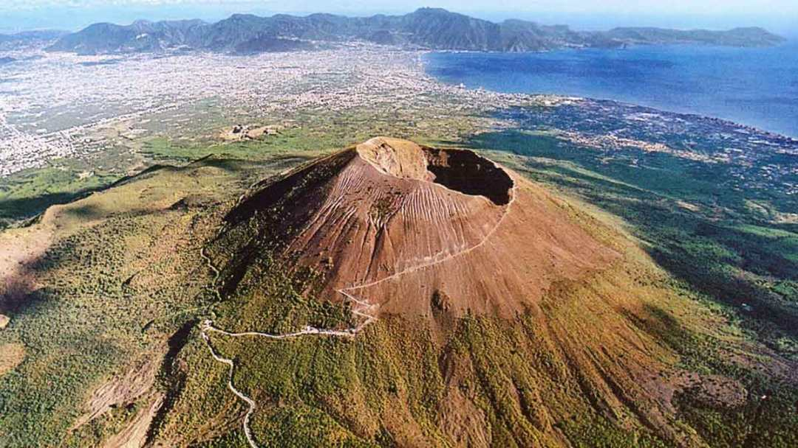

PARCO DEL VESUVIO
Il Parco Nazionale del Vesuvio circonda uno dei vulcani più famosi al mondo, il Vesuvio, che si erge maestoso sul Golfo di Napoli. La sua importanza storica, geologica e culturale è innegabile: la violenta eruzione del 79 d.C. che distrusse Pompei ed Ercolano rimane scolpita nella memoria collettiva, e ancora oggi il Vesuvio rappresenta un richiamo per ricercatori, turisti e abitanti locali. Istituito nel 1995, il parco protegge non solo il cono vulcanico, ma anche un territorio di grande ricchezza paesaggistica, dove si alternano boschi, colate laviche antiche, vigneti rigogliosi e insediamenti rurali.
L’obiettivo principale è salvaguardare questo ambiente unico, in cui il clima mediterraneo incontra la forza primordiale della terra, creando un ecosistema dinamico e vario.

PUNTI DI INTERESSE
Il cuore del Parco è il Cratere del Vesuvio, che può essere raggiunto tramite un percorso panoramico culminante in un’area di osservazione posta a circa 1.200 metri di altitudine. Da lassù, si gode di una vista incomparabile sul Golfo di Napoli, con le isole di Capri, Ischia e Procida all’orizzonte. A poca distanza si trova la Valle dell’Inferno, un itinerario affascinante che attraversa boschi di lecci e antiche colate laviche, mettendo in evidenza la potenza delle eruzioni passate. Sono meritevoli di visita anche le Ville Vesuviane, costruite nel Settecento lungo il celebre Miglio d’Oro, testimonianza del periodo in cui la nobiltà napoletana sceglieva le pendici del Vesuvio come luogo di villeggiatura.
Per chi è interessato all’archeologia, i siti di Pompei, Ercolano e Oplonti si trovano appena fuori i confini amministrativi del parco, ma rappresentano tappe imprescindibili per chi desidera comprendere la storia di questo territorio.

ATTIVITÀ SPECIFICHE
Il Parco Nazionale del Vesuvio offre una rete di sentieri ben strutturati, suddivisi in base a livello di difficoltà e tematica. Da itinerari brevi per famiglie a percorsi più impegnativi per escursionisti esperti, vi è la possibilità di esplorare boschi di pini e ginestre, sfiorare le colate laviche pietrificate e incontrare segnali della più recente attività vulcanica. Alcune associazioni organizzano visite guidate con geologi che illustrano le particolarità del suolo e gli strumenti di monitoraggio sismico e vulcanologico
Altra esperienza consigliata è la degustazione dei prodotti tipici del territorio: il famoso vino Lacryma Christi del Vesuvio, ottenuto da uve coltivate su terreni vulcanici ricchi di minerali, oppure i pomodorini del piennolo, apprezzati per il loro sapore intenso. Non mancano piccole aziende agricole che propongono tour e assaggi, per unire l’aspetto naturalistico a quello gastronomico.
CENNI SU FLORA E FAUNA
La vegetazione vesuviana è contraddistinta dalla macchia mediterranea, con ginestre che colorano di giallo le pendici durante la fioritura primaverile. Oltre alle ginestre, sono presenti pini, lecci, roverelle e betulle, introdotte in alcune aree per favorire il rimboschimento. L’alternanza di eruzioni ha modellato il territorio in modo discontinuo, creando habitat differenti in pochi chilometri.
La fauna include volpi, conigli selvatici, ricci e diversi tipi di rettili. È possibile avvistare poiane, falchi pellegrini e nibbi reali, mentre i boschi ospitano picchi, tordi e ghiandaie. Le attività di conservazione del parco mirano a ripristinare e mantenere la biodiversità endemica, sebbene la vicinanza di aree urbane e l’intensa frequentazione turistica richiedano un costante monitoraggio.

INFORMAZIONI UTILI
Per visitare il Cratere è necessario acquistare un biglietto d’ingresso, con possibilità di usufruire di visite guidate. È consigliabile prenotare online, specialmente durante l’alta stagione e nei weekend, per evitare lunghe code. Il clima può variare sensibilmente durante la giornata: d’estate fa caldo alla base del vulcano, ma è sempre meglio portare una giacca per il vento in quota. D’inverno, alcune giornate possono essere piovose e le temperature più basse, pertanto occorre abbigliamento adeguato.
Il parco è accessibile da più punti, ma i più comuni sono Ercolano e Torre del Greco: da qui partono bus navetta che portano i visitatori fino alle quote più alte. Per chi utilizza l’auto, è necessario fare attenzione alle restrizioni di parcheggio lungo la strada che sale al Vesuvio. Sul piano della sicurezza, è bene ricordare che il vulcano è attivo, seppure in stato di quiescenza, quindi si raccomanda di seguire le indicazioni delle autorità competenti e di non abbandonare i sentieri segnalati. La fruizione responsabile del Parco Nazionale del Vesuvio permette di coniugare la scoperta di un patrimonio naturalistico e culturale di enorme valore con l’emozione di salire su uno dei vulcani più celebri al mondo, scenario di leggende, opere letterarie e studi scientifici fin dall’antichità.
Una menzione speciale va fatta per il ricco patrimonio archeologico che circonda l’area, poiché la storia del Vesuvio è indissolubilmente legata alle vicende di Pompei ed Ercolano. Percorrendo i sentieri del parco, ci si trova spesso di fronte ad antichi muretti a secco e terrazzamenti utilizzati per la coltivazione della vite e di altre piante, una pratica agricola tramandata da generazioni che rende il paesaggio rurale un vero mosaico di tradizioni. Gli enti locali promuovono iniziative di educazione ambientale, rivolte soprattutto alle scuole, per sensibilizzare i più giovani sul valore della biodiversità e della prevenzione dei rischi naturali.
La convivenza con un vulcano attivo richiede infatti piani di emergenza e una costante attività di monitoraggio, gestita dall’Osservatorio Vesuviano. La presenza di tali controlli garantisce un equilibrio tra la salvaguardia delle persone e la protezione di un ecosistema la cui vitalità è alimentata dal fuoco sotterraneo. In qualunque stagione si scelga di visitarlo, il Parco Nazionale del Vesuvio offre scorci unici e un innegabile senso di contatto con le forze primigenie della terra, invitando al rispetto di un territorio fragile eppure straordinariamente fecondo, dove la natura e la storia dell’uomo sono da secoli legate a doppio filo.

Parchi più visitati

PARCO
DELL'ETNA

PARCO
DEL VESUVIO

PARCO
DELLA SILA